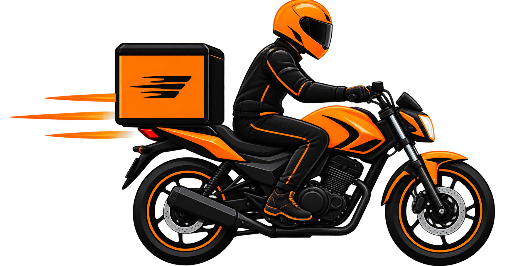

Motos
Nuestras motos son la opción más rápida para envíos urgentes y paquetería liviana dentro de la ciudad. Permiten evitar demoras por el tráfico y realizar entregas en el día puerta a puerta.
- Capacidad: Hasta 25 - 30 kg.
- Tipo de carga: Sobres, documentación, paquetes chicos y pedidos de e-commerce.
- Servicio: Entregas express en el día y mensajería programada.
- Seguridad: Baúl hermético para proteger los paquetes contra lluvia o golpes.